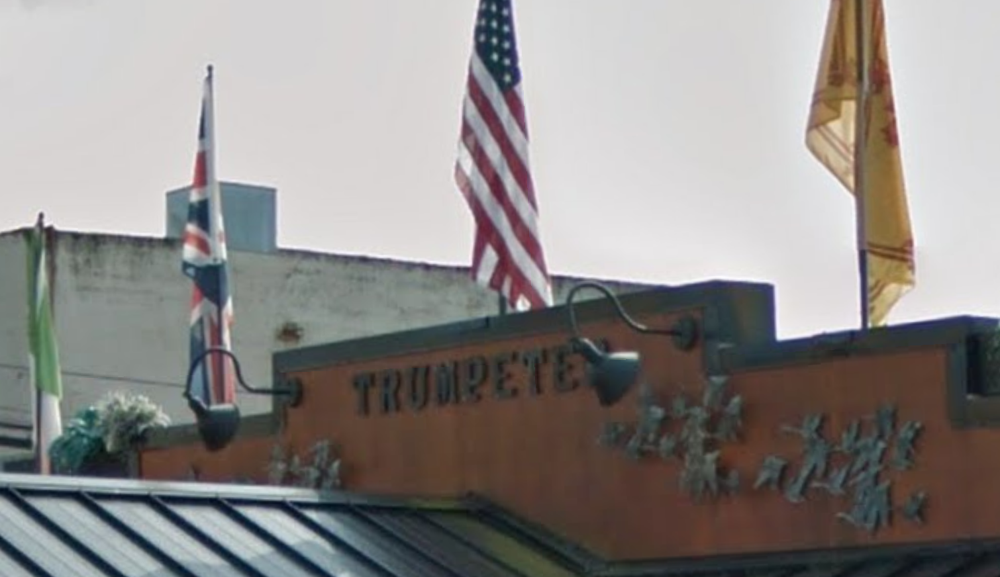

Through the Keyhole
Lock VIII
The blossom path sweetly declares,
Good luck and the love of someone who cares.
Walk west away from the waters’ wall,
Look and listen for the Trumpeter’s call
But don’t stop just on precedent
On king’s corner now sleeps a President
